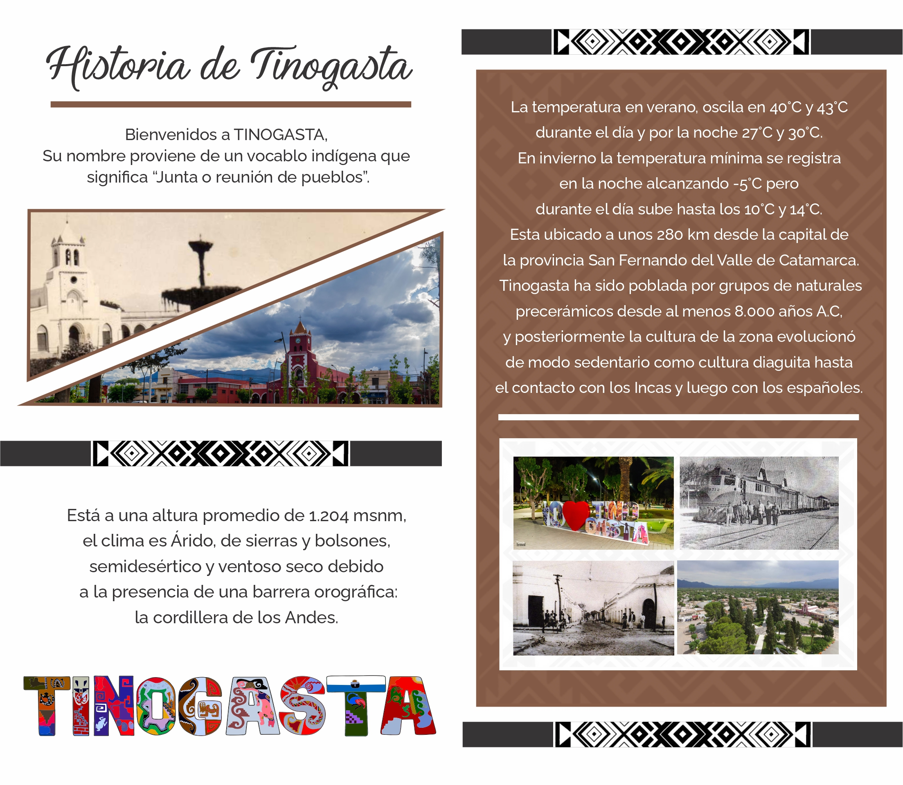

"Tinogasta" significa en lengua cacán "Junta o reunión de los pueblos".

Limita al norte con el departamento Antofagasta de la Sierra, al este con los departamentos de Belén y Pomán, al sur con la provincia de La Rioja y al
oeste con la República de Chile.
Tinogasta es la cabecera Departamental.
Este funcionario español, reconoce y menciona tres veces como “pueblo y tierra Diaguita” a Tinogasta. Dándole el rango d, de “Encomienda”, por lo
que toma la medida de “amojonar” el “Pueblo de Tinogasta”, de esta manera, los historiadores modernos toman esta fecha de: 14 de Agosto de 1713,
como la fecha de “la demarcación” del pueblo de Tinogasta. Como todo el territorio que hoy ocupa el ejido urbano de Tinogasta es declarado como
una encomienda”, los españoles fueron obligados a fundar sus estancias lejos de este pueblo Diaguita, de allí que han nacido pueblos que hoy
conocemos como de “La Ruta del Adobe”, mencionaremos por ejemplo: Copacabana, El Puesto, La Falda, Anillaco y Fiambala.
El desarrollo urbano de Tinogasta,
comienza a hacerse efectivo después de la Revolución de Mayo, existen documentos históricos que menciona al
“Pueblo de Tinogasta” como una “Encomienda” en los años 1807 (año de la invasión inglesa al Rio de La Plata).
En 1848, comienza efectivamente un proceso de urbanismo que con los años ha tomado el actual trazado (damero) moderno, debido al loteo para la
venta, y recaudación del dinero para la construcción de la Iglesia parroquial San Juan Bautista que hoy ocupa el centro de la ciudad. Desde aquellos
años, toma importancia la presencia de Tinogasta, como lugar importante del comercio de vacunos a Chile, luego ser “punta de rieles” del ferrocarril
General Belgrano, y punto importante a fines del Siglo XX como territorio de mayor producción vitivinícola de la Provincia de Catamarca.